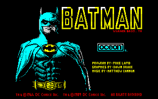
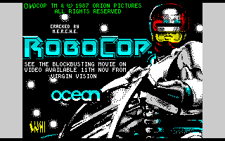
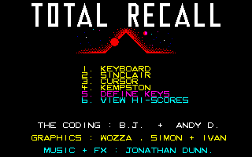
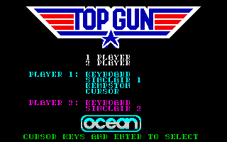
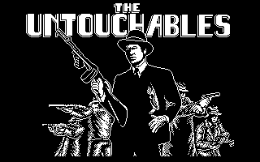

Ocean Colour Scenes
Ocean Colour Scenes | One of the Speccy's biggest game publishers, Ocean made their name converting movie titles to everyone's favourite home computer (which, if you're an Amstrad, Commodore, Amiga or Atari user, is the Spectrum). There was a time when every top Hollywood flick got the Ocean treatment and was released on tape so that the video gaming masses could copy their screen heroes'ílatest, well, heroic, escapades for themselves. The only thing better than watching a movie is actually taking part in it yourself; although this became the catchphrase of the Interactive Movie‘, the philosophy was Ocean's defining mission statement for many a blockbusting flick. However, the journey from big screen film reel to home computer tape is fraught with all kinds of dangers (usually those involving lots and lots of platforms) and the games themselves often fared poorly as pieces of videogaming history compared to those written solely for the format. | |
| Nowadays, with the modern home computer pushing the 3D-accelerated 500Mhz barrier, one would think that the movie itself could be re-produced on the computer (as they are with DVDs), but the realisations often receive the same lukewarm reviews and criticisms of their eight-bit ancestors. Generic, say the reviewers, uninspired tosh released to cash in on the movie. Men In Black, Disney's Hercules, Independence Day, Star Wars: The Phantom Menace... the contemporary list goes on. Such is the popular mistrust imbued in any game named after a film that punters and critics alike are naturally suspicious, and with reason: aside from Die Hard Trilogy, can anyone name a good game of a film in the past five years? Indeed, computer game companies have gone full circle it would seem, now releasing games on their own ideas, or games based around a successful franchise such as the Star Wars series of software, or even making their own movies inside a game. Probably the most successful realisation of this was Origin's Wing Commander III - Prophecy games on the PC, yet probably no sci-fi fan would watch them in preference to J. Michael Straczynski's Babylon 5 series or Star Trek: First Contact. | |
| But what were things like way back in the beginning when Ocean were releasing conversions of movies for the Speccy, having to rely on innovative design and careful programming rather then FMV cutscenes and big stars to capture the feel of your favourite movie? Were reviewers being unrealistic, expecting the magic of filmed Hollywood to be perfectly copied on the Spectrum and other formats with such limited technology? Personally, I would argue that cunningly designed games can capture the essence of what makes a good action movie - involving plot, neat set-pieces, character interaction and drama, obstacles to overcome - without needing today's PIII 500 technology. Yet it's never easy to find the creative impulse to realise this, so the end result is often generic, the simplest route to kind-of-follow the film's plot taken, dropping the set pieces and character interaction that help make them. But people have already written volumes on what makes a bad game of a film in game design terms - take your pick from any Your Sinclair review of a game of a film. No, what we're going to have a look at now is how close the games themselves come to capturing the feel and identity of the original film. I've taken a few Ocean film games - Batman, Highlander, Robocop, Total Recall, Top Gun and The Untouchables - and I'll take a look at how true they are to the feel and character of the original movies, to what the extent the soul of the movie can be found in the game. So, if you feel ready grab a bag of popcorn and a tall Coca Cola over ice as we dim the lights at the YS3 screening room and start the films... | |
|
Batman Who's in it? Michael Keaton, Kim Basinger, Jack Nicholson. What's it about? Our favourite, mysterious, hard-as-nails Caped Crusader‘ swoops from the shadows to stop the deliciously evil Joker and steal the girl's heart. So what's the feel? Moody, dark... in short, black as the starless night. And what's the game like? Itís not exactly a platform game, which is good. Of the five levels, the first and last are spent wandering around huge expanses in a not-very-Batman-like way of getting lost, shot and blown up, all in plain view; so stuff the film's essential shadows and skullduggery atmosphere and the wonderful interplay between the Joker and Batman. However, the driving level in the Batmobile and the flying level in the Batwing fare much better as you belt around Gotham City and the middle level's solve-the-Smilex-gas puzzle is almost right out of the film... except for the time limit. And at least all the sections are rememberable from the film. All in all, not too bad. Bullet-proof latex costumes: 6/10 |
 |
|
Highlander Who's in it? Christopher Lambert, Sean Connery What's it about? Apparently there are immortals among us, those who can only be killed by decapitation and with one goal in life: to kill every other immortal in order to receive the ìQuickeningî. Christopher Lambert is one such chap, who the film follows through a series of quite coherent flashbacks to his eventual victory as the only immortal left standing. So what's the feel? An epic battle which spans the ages, with the tension that all immortals are involved whether they like it or not, even to the extent of having to kill their friends... it's all kind of mauve. And what's the game like? The angle taken is of the one-on-one beatíem up which ignores the character of the film, but is fine if properly realised with a six-button pad. Yes: oh, dear. In reality, two huge and horribly pixellated sprites lollop across the sparse screen, each armed with a sword (or a giant twiglet) and an embarrassing lack of moves, to try and kill the other. As theyíre immortal, mere blows do not harm and yet they're so difficult to pull off that you'll never do more than one move every minute or so AND there seems to be no decapitation move. So these battles could carry on... forever. Yikes. Decapitated immortals: 0/10 |

|
|  |
Robocop Who's in it? Peter Weller, Nancy Allen, Ronny Cox What's it about?In the cities of the future criminals run riot, gunning down cops for a past-time. Alex Murphy, their latest victim, has what's left of him joined with some bits of tough metal and made into Robocop. However, his past gradually seeps back and he heads off after the men responsible for his (sort of) death, uncovering corruption at the highest levels of OCP, the company who built him. So what's the feel? Moody, dark, and violent in the extreme. And what's the game like?As Robocop you go around shooting everyone, like he does in the film, but without the human psychology/identity stuff in between the outbursts of violence. Robocop's a good bit more vulnerable in the game, but he still feels rock hard as bullets slice through the opposion and almost bounce off him. It all feels mighty close to really having been in the movie (complete with Prime Directives and scrolly text with flasing cursors) and incorporates a fair few of its scenes in order in the (non-platforming) levels, and even has a photo-fit bit to add variety. Gun-toting cyborgs: 9/10 |
|  |
Total Recall Who's in it? Arnold Schwartzenegger, Sharon Stone, Michael Ironside What's it about? A very good question... I think it's something to do with a bloke who goes for a virtual holiday as a spy to find it coming true... or is it? Anyway, suffice to say lots of people die as Arnie tries to uncover the truth on Mars in a rather-less-subtle-than-Bond kind of a way. So what's the feel? Dark, derelict, violent, confusing... in short, Bond meets Twin Peaks in the city from Blade Runner. And what's the game like? Mostly, it's a platform game as you control a comically-Arnie-esque sprite running around hugely complicated levels finding items, dispatching baddies and hitting coloured switches to control the coloured block lying around the place. Itís stuffed to the gills with that classic: 'Oh, yes, I remember this from the movie' (expressed sarcastically with a really quizzicle expression) line as you soon realise this could be any game and, you secretly hope, is not really the only one you'll get for the supremely intriguing, cunning and violent film. Flashback, although with a slightly different plot, did it so much better. Amount of sense made: 2/10 |
|
Top Gun Who's in it? Tom Cruise, Anthony Edwards, Val Kilmer What's it about? Some say the ultimate boys' film (though girls go for the half-naked handsome blokes); Maverick trying to get into the Top Gun elite flight school is a great excuse for some really cool F-14 dogfights, gorgeous guys and gals and macho head-banging. So what's the feel? Brash, tanned, adrenaline-pumped tosh... in short, Baywatch with planes. And what's the game like? Well, I couldn't actually get past the 'Select Controls' screen as all button presses ended in defining keys. I still included it here as the button-pressing was good training for finding them on the keyboard and learning plane terms such as climb, bank left etc. and the film's about a plane training school. And the title music and font really felt like the movie. Missiles left: 3/10 |
 |
|
The Untouchables Who's in it? Kevin Costner, Sean Connery, Robert DeNiro What's it about? In mob-ruled America of the '30s, Elliot Ness and his band of gun-toting mates decide that enough is enough and stand up to Al Capone and his empire of crime. Much gun-toting action results in quite possibly the classic tale of the good guys standing up to organised evil. So what's the feel? Gritty, realistic, physchological... in short, Unforgiven in the thirties. And what's the game like? Jumping is the image stuck in my mind; jumping like a jackrabbit with a pin up its bottom to avoid the merciless hoardes while being shot lots and shooting them lots. As with the film thereís lots of baddies, and the graphics are black and white (so they feel '30s) but the music sounds to have been taken from a Charlie Chaplin movie so it feels like some kind of bizarre comedy. Chance of back-up: 1/10 |
 |